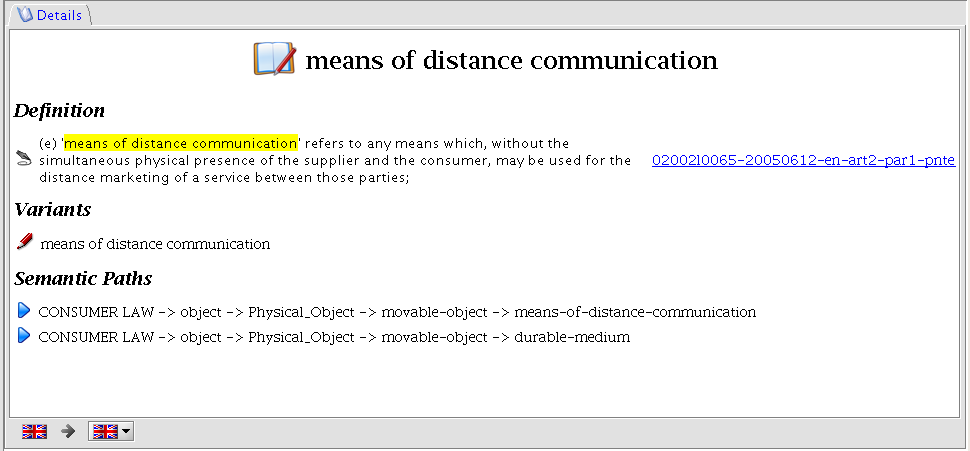

Details Panel

The Details panel shows additional informations on the selected term
- Its Definition if it is a Defined Term
- Its Lexical Variants
- The list of Semantic Paths or Ontology Class names under which the selected term is classified
in the selected local language